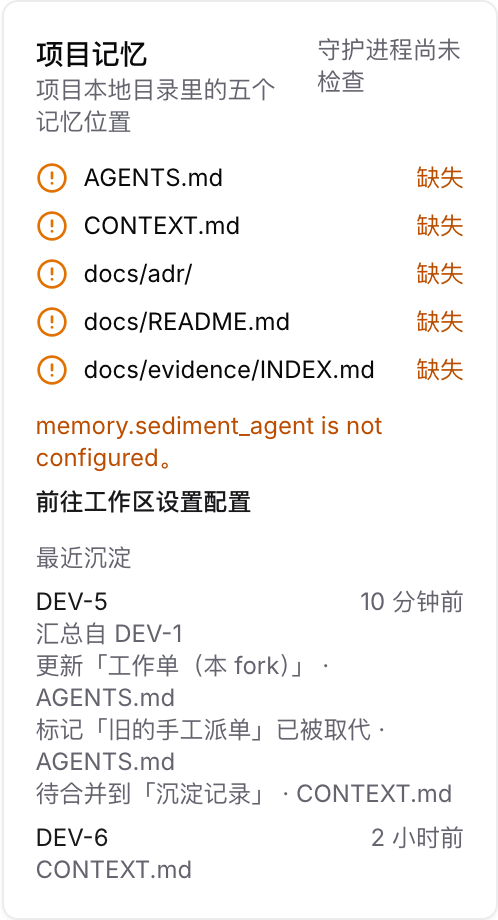
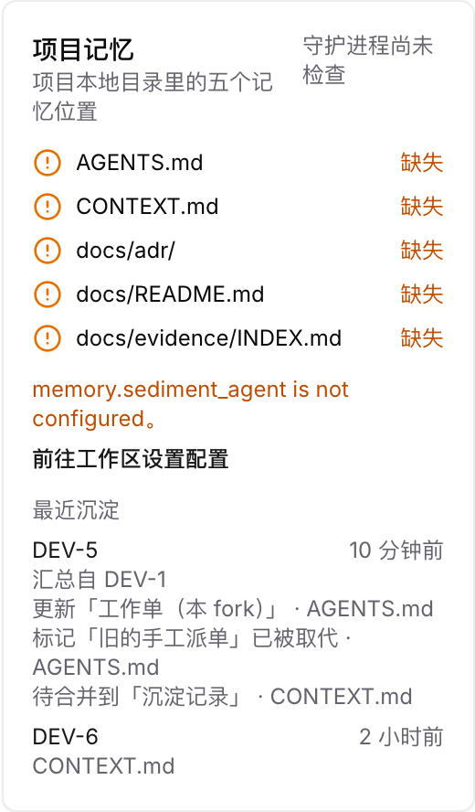
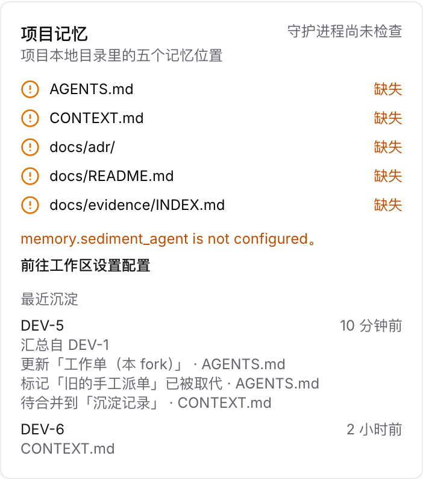
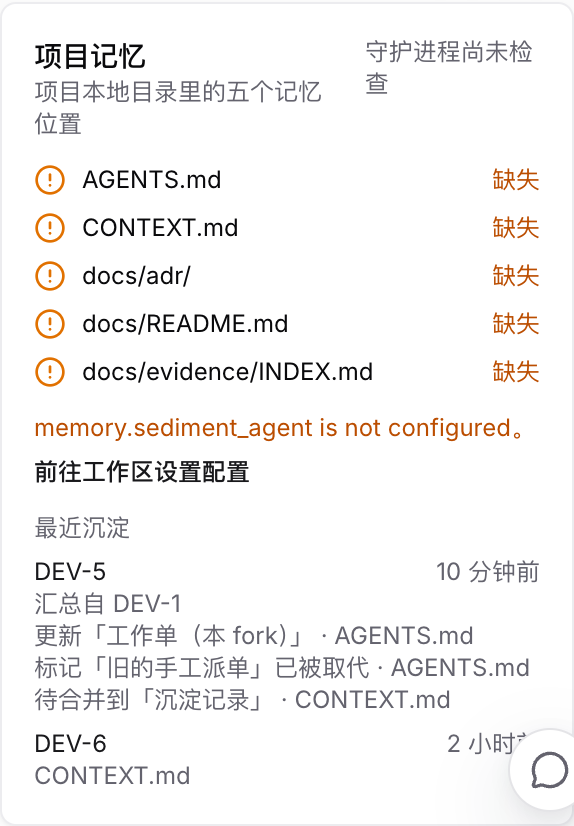
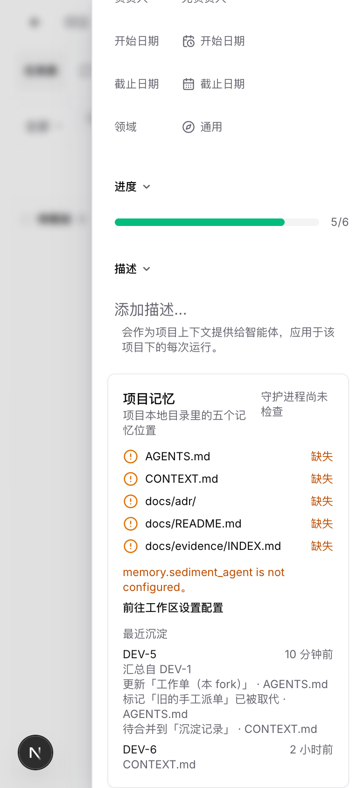
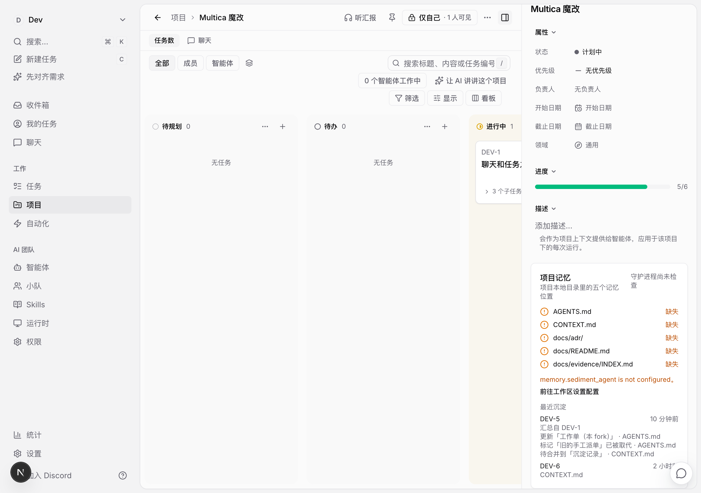

老板层沉淀多一行「汇总自 DEV-1」，每条改动写明动作；执行层沉淀照旧只列文件。截图来自本地真实页面，数据为示例。






KEY PATH LOCAL MODIFIED agents AGENTS.md missing context CONTEXT.md missing adr docs/adr/ missing docs_index docs/README.md missing evidence_index docs/evidence/INDEX.md missing Recent sediments: 2026-10-08T10:40:29-05:00 boss DEV-5 <- DEV-1 agents:update「工作单（本 fork）」; agents:supersede「旧的手工派单」; context:merge「沉淀记录」 2026-10-08T08:45:29-05:00 worker DEV-6 context